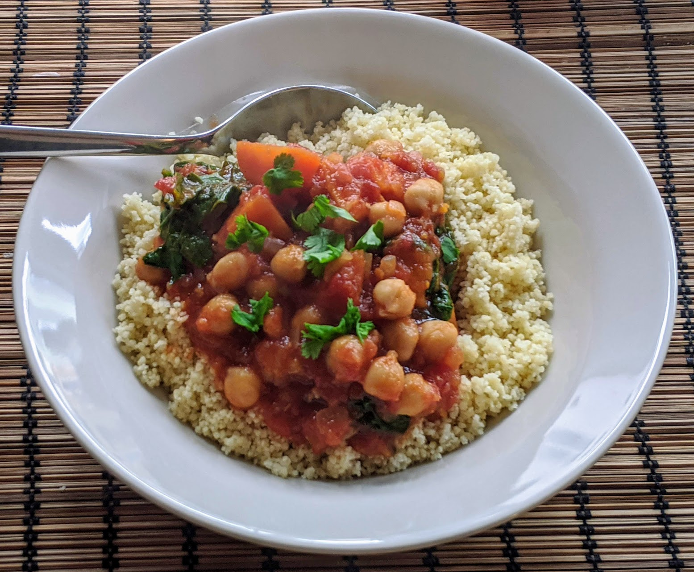

Tajine de légumes au citron

Pour 4-5 personnes :
- Deux oignons
- Quatre gousses d'ail
- Quatre grosses carottes
- 600g de courge butternut, ou de patates douces
- Une grosse boîte (de 800g) de tomates concassées
- Une boîte (de 400g) de pois chiches
- Trois ou quatre poignées d'épinards
- Un demi-litre de bouillon de légumes
- Un citron confit au sel
- Trois cuillère à café de coriandre en poudre
- Deux cuillères à café de cannelle en poudre
- Une bonne cuillère à café de piment de Cayenne en poudre
- Une cuillère à café de gingembre en poudre
- Une pincée de fils de safran
- Une bonne cuillère à soupe de miel
- (Facultatif) Du persil, ou de la menthe, ou de la coriandre, pour décorer
- Sel, poivre, huile d'olive
- Éplucher et émincer les oignons, les faire dorer dans pas mal d'huile d'olive au fond d'une grosse cocotte ou une tagine. Éplucher et écraser l'ail, le rajouter lorsque les oignons sont dorés. Ajouter les épices pour que ça s'imprègne bien.
- Pendant ce temps, éplucher les carottes et la courge, les couper en dés, et les rajouter au fur et à mesure dans la cocotte.
- Enlever la pulpe du citron confit, rincer abondamment la peau, la couper en fines lamelles, et la rajouter avec les tomates et le bouillon. Porter à ébullition et laisser mijoter 30 minutes.
- Égoutter et rincer les pois chiches, les ajouter et les laisser un quart d'heure. Pendant ce temps, laver et équeuter les épinards.
- Ajouter le miel, goûter et ajouter du sel si besoin, puis ajouter les épinards et mélanger.
- Servir une fois que les épinards ont bien diminué de volume, avec du couscous. Ajouter un peu d'herbes ciselées (persil, menthe, coriandre), et pourquoi pas quelques graines de grenade, pour décorer.
Remarque : comme tous les tajines, ça se fait très bien dans une mijoteuse, environ 6h